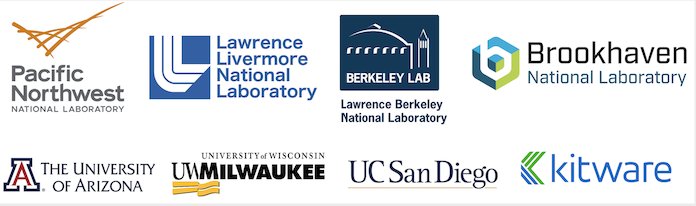

Collaborating institutions and their POCs

- Pacific Northwest National Laboratory (PNNL), Hui Wan
- Lawrence Livermore National Laboratory (LLNL), Christopher J. Vogl
- Lawrence Berkeley National Laboratory (LBNL), Ann S. Almgren
- Brookhaven National Laboratory (BNL), Wuyin Lin
- The University of Arizona (U. Arizona), Xubin Zeng
- University of Wisconsin - Milwaukee (UWM), Vincent E. Larson
- University of California San Diego (UCSD), Guang Zhang
- Kitware Inc (Kitware), Berk Geveci
Project leadership team
- Hui Wan, PNNL, Principal Investigator
- Xubin Zeng, U. Arizona, Earth System Science Lead
- Carol S. Woodward, LLNL, Applied Math and Computer Science Lead
- Wuyin Lin, BNL, liaison with the E3SM project
Team members
| Name | Institution | ORCID |
|---|---|---|
| Hui Wan | PNNL | 0000-0001-5294-4116 |
| Sean Patrick Santos | PNNL | 0000-0002-6588-9555 |
| Brian J. Gaudet | PNNL | 0000-0002-9955-1501 |
| Jianfeng Li | PNNL | 0000-0002-1091-9753 |
| Panos Stinis | PNNL | 0000-0002-9928-5637 |
| Philip J. Rasch | PNNL | 0000-0002-5125-2174 |
| Carol S. Woodward | LLNL | 0000-0002-6502-8659 |
| Christopher J. Vogl | LLNL | 0000-0002-3855-694X |
| Ann S. Almgren | LBNL | 0000-0003-2103-312X |
| Wuyin Lin | BNL | 0000-0002-3392-9954 |
| Xubin Zeng | U. Arizona | 0000-0001-7352-2764 |
| Michael A. Brunke | U. Arizona | 0000-0002-2677-7446 |
| Vincent E. Larson | UWM | 0000-0002-0586-8525 |
| Brian M. Griffin | UWM | |
| Guang Zhang | UCSD | 0000-0002-9712-5226 |
| Xiaoliang Song | UCSD | |
| Berk Geveci | Kitware | |
| Chris Harris | Kitware | |
| Brianna Major | Kitware |